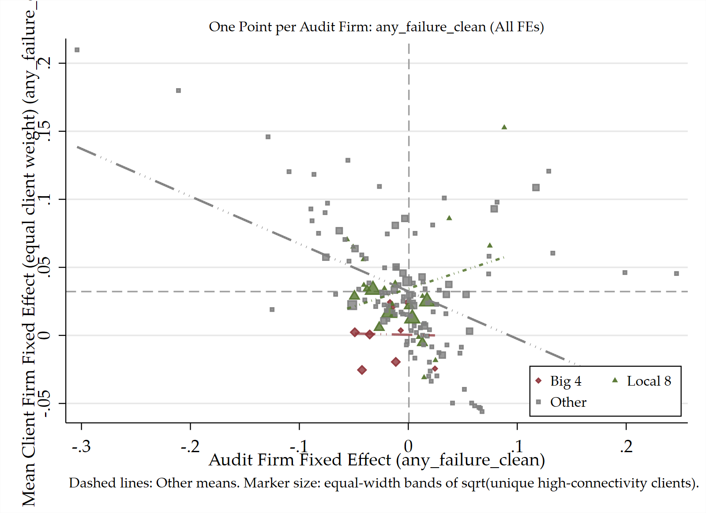

双周备忘录
2026-09-28 讨论提纲
本次汇报围绕五项更新：事务所 FE 分布与客户匹配的直观展示、稀有失败对 AKM 的含义、不同 cutoff 与双边分解、caseload 工具的口径更新，以及财务控制变量的敏感性。重点区分已有结果、测量诊断与尚待完成的识别。
1. 四大、本土八大与 Other 的事务所 FE 分布及匹配
展示原有的 audit-firm FE 分布，以及 audit-firm FE 与平均 client FE 的联合散点图。散点图每个点代表一家事务所，横轴为 audit-firm FE，纵轴为客户等权平均 client FE；虚线标示 Other 组均值。先看全部 FE，再对照原程序保留显著 FE 后的图。

2. Rare event 是否导致 AKM 估计有偏？
稀有失败的核心问题是auditor FE 的信息量、跨样本稳定性与插件方差偏误。 无偏性仍依赖正确的条件均值、外生性及网络识别。人力资本对估计分数的解释力较低，也可能反映 FE 测量噪声。
现有检查中，获得分数的当期 A1 观测有 74.84% 对应零失败训练历史，训练报告数中位数仅 12 份，比例按当期观测计权。新接任项目的前瞻 AKM 分数系数为 −0.00121（SE=0.00466，p=0.795），没有稳定预测改善。结果与信息稀疏的解释一致；少数失败对估计值的影响度仍待量化。
讨论重点是保留严重失败指标，同时推进事件计数、单次事件影响度、网络精度和 leave-out 诊断。Jochmans–Weidner 讨论网络固定效应精度，Kline–Saggio–Sølvsten 讨论方差分量修正；相关文献、公式和解释已集中放在 AKM 的 rare-event 小节。
3. 更多 cutoff 与两两组合的 AKM
分别比较不设门槛、3 份／3 年和 5 份／5 年，并将客户、事务所、审计师两两组合估计。总体排序仍为 client FE 份额最大、auditor FE 其次、audit-firm FE 最小。 综合未预警失败的客户×审计师模型中，客户份额依次为 30.9%、31.4%、32.3%，审计师为 15.8%、14.3%、12.6%；事务所×审计师模型中，事务所份额为 4.4%、4.1%、3.9%，审计师为 16.4%、14.2%、12.5%。
两两组合与三维基准的插件方差排序接近。该比较描述不同样本和模型下的异质性份额，个人分数的精度与方差偏误另由可靠性诊断评估。
4. Caseload=0 与第三个工具改为 caseload ≤1
业务量描述已经考虑同一审计师—事务所服务区间内没有上市客户的年份，第三个 IV 的 share 定义已改为 同类候选 A1 中 caseload≤1 的人数占比。当前结果的总体判断与此前接近，仍未形成跨特征、跨工具一致的失败率改善。
描述图与 IV 候选 roster 的覆盖不同：补入的零值目前只进入描述图。 名单仍由上一年观察到上市签字的 A1 构成；在这一名单中，=1 与 ≤1 实际选择同一批人。零客户年份是否仍在该所任职并可承接项目，是下一步补池需要核实的内容。
5. Caseload IV：加入与不加入财务控制
在保留目的事务所和年份 FE、其他设计控制的基础上，比较是否加入公司财务控制。324 个二阶段结果中，311 个方向相同，319 个显著性档位相同，总体判断不变。 两个主要负向结果很接近：本科及以上的占比工具对应任期综合失败由 −0.259 变为 −0.256；历史无违规的平均业务量工具对应首年重述由 −0.117 变为 −0.119。
96 个规格的估计样本量发生变化，极弱第一阶段下仍有大幅系数跳动。下一步应将同样本控制比较与弱工具推断分开核验。
数据、程序与输出记录
本次使用已有输出更新展示并核对数值，没有重新运行回归或 Stata。事务所 FE 分布与散点图使用 results/figures/selection_matching/audit_firm_akm/ 中的原图；cutoff 来自 pairwise_akm_report_year_sensitivity.csv；财务控制比较配对 caseload_matching_iv_pool_estimates_auditfirm_fe_with_financial_controls.txt 与 caseload_matching_iv_pool_estimates_auditfirm_fe_no_financial_controls.txt。财务控制比较记录由 maintenance/prepare_meeting_memo.py 生成；rare-event 诊断使用已完成的 audit_outcome_identification.md。
归档
后续带日期的备忘录将存放于 memos/。
2026-10-26 会议：重述指标、严重程度与市场预期
问题：核清重述指标，并描述严重程度。 本节回答发生率为何变化、缺失与年份如何处理、调整幅度多大，以及恢复市场当时看到的年报数值后，多少公司年的“超预期／不及预期”判断会变化。
主要发现：同一批样本的重述率随定义由 16.23% 降至 9.25%、再降至 3.52%。严格重述中已恢复或确认 1,537／2,348（65.46%） 的原报EPS；已确认 104 个公司年改变surprise分组，其中 16 个直接在“超预期”和“不及预期”之间转换。 金额、恢复覆盖和分组变化均为当前数据的描述性核查。
1. 发生率变化：先固定样本，再区分定义
以下共同样本是市场信息账本中2001—2024年的 66,754个公司年，每个公司年一行；原有EPS与180天surprise分别可用 65,947、32,086 个。它是本次恢复核查的共同样本，表中比例不混用其他回归或事件窗样本的分母。
| 口径 | 公司年数／共同分母（发生率） |
|---|---|
| 宽口径重述 | 10,837／66,754（16.23%） |
| 排除明确财务不变的重述 | 6,173／66,754（9.25%） |
| 严格重述（当前基准） | 2,348／66,754（3.52%） |
| 严重重述（严格重述的子集） | 1,073／66,754（1.61%） |
三种重述口径均先排除业务分类明确的纯会计政策／估计变更，并保留明确差错、混合业务与跨库分类冲突记录。宽口径不筛财务变更或盈余方向；中间口径仅排除旧库 IsFinancialDataChange=0、新库 CorrectionType 恰为 2 的公告。严格口径要求旧库财务变更标记为 1、新库更正类型恰为 1，且有盈余增减方向；新库 1,2 等多选值不进入严格口径。
因此，宽口径到中间口径减少 4,664 个公司年；中间口径到严格口径再减少 3,825 个，后者同时涉及财务变更确认、多选类型和盈余方向筛选。这些发生率差异来自测量范围收窄，不能解释为财务质量改善。 严格重述也不是所有会计差错更正的全集。
2. 缺失处理、年份归属与年度变化
- 缺失不等于没有变化。 财务变更字段缺失在中间口径中保留，在严格口径中不满足条件；盈余方向缺失也不进入严格口径。原因分类缺失在既有程序中默认归入差错类，这只是编码规则。并入公司年面板后，未匹配事件的指标记为0，含义是“数据库中没有符合该定义的可匹配记录”。
- 按被更正财年归属。 旧库用
RestatementYear，新库将Accper中多个年度展开，再按公司—财年去重；不按更正公告年归属，也不以公告年填补缺失财年。例如2021年公告更正2018、2019年，分别计入2018、2019年。该归属便于识别对应年报，不能用作市场获知重述的事件日期；现有指标也未额外要求更正公告必须发生在财年结束之后。 - 金额缺失与预测缺失分别处理。 旧严重程度面板把缺失影响金额填0，新库该旧金额变量也填0，因此它不适合解释“零调整”。下表的调整幅度改用已核实的逐年合并净利润前后值。没有可用预测或预测中位数为0时，surprise继续缺失，不归入中性组。
| 被更正财年 | 公司年数 | 严格重述／公司年数 | 严重重述／公司年数 |
|---|---|---|---|
| 2001—2009 | 12,728 | 89／12,728（0.70%） | 53／12,728（0.42%） |
| 2010—2014 | 12,156 | 235／12,156（1.93%） | 127／12,156（1.04%） |
| 2015—2019 | 16,911 | 876／16,911（5.18%） | 433／16,911（2.56%） |
| 2020 | 4,264 | 245／4,264（5.75%） | 109／4,264（2.56%） |
| 2021 | 4,774 | 242／4,774（5.07%） | 95／4,774（1.99%） |
| 2022 | 5,147 | 246／5,147（4.78%） | 99／5,147（1.92%） |
| 2023 | 5,365 | 238／5,365（4.44%） | 93／5,365（1.73%） |
| 2024 | 5,409 | 177／5,409（3.27%） | 64／5,409（1.18%） |
严格重述率在2015—2020年较高，2024财年降至 3.27%。年度比较还受可观察期限和数据覆盖影响：旧重述公告源的公告期止于2021年，新库有部分记录缺失被更正财年，不能进入年度指标；新近财年也可能尚未暴露后续更正。这里报告观察到的年度差异，不将后期下降直接归因于质量改善。
3. 严重程度：既有分类与实际调整幅度分开看
现有严重重述指标依据性质与跨年范围，不采用金额阈值。 在严格重述中，满足监管／媒体等原因分类、涉及至少两年、或舞弊／虚增虚减等文本特征之一，且不属于程序识别的准则／估计调整或统一监管口径调整，即记为严重。监管／媒体原因与文本命中是分类代理，不能逐例等同于已证实舞弊。当前严重重述为 1,073／2,348（45.70%） 的严格重述。
| 调整量 | 严格：中位数 | 严格：P90 | 严重：中位数 | 严重：P90 |
|---|---|---|---|---|
| 净利润绝对调整（万元） | 630.68 | 13,626.75 | 767.94 | 17,141.85 |
| EPS绝对调整（元／股） | 0.0117 | 0.2061 | 0.0148 | 0.2734 |
| 净利润相对调整幅度（%） | 4.72 | 83.36 | 5.70 | 86.72 |
严格与严重两列分别基于 1,537、760 个已核实公司年，包括确认EPS无需改变的记录；两类不是独立样本。绝对调整为“原报值−当前数据库值”的绝对值，相对调整为该利润差额除以原报净利润绝对值；原报利润为0时相对量留缺失。它衡量恢复幅度，不重定义严重重述。严格样本中，恢复后EPS上升 885 个、下降 336 个、确认不变 316 个。净利润口径为合并净利润，不能将多年度累计调整金额整额复制或平均分配给各财年。
4. 恢复原报后，多少surprise判断会改变？
恢复方向是把现在的数据改回首次年报公告时市场看到的值，即使当时的数值事后被认定错误。 使用差错更正前后对比表、连通且端点匹配的更正链，以及已核实的原始年报补证；只有独立账本中 endpoint_usable=True 的记录计入以下影响。未核实的候选不计入恢复。
EPS沿用现有“合并净利润／年末股本”定义及FAR分支的精度规则，固定股本与原180天预测中位数。这不是年报列示的“归母净利润／加权平均股数”基本EPS。surprise按下式重算，继续使用原有Rptdt预测窗口，不采用已撤销的公告前10天剔除规则：
\[ S_{it}=\frac{EPS_{it}-\operatorname{Median}(ForecastEPS_{it,180})}{\left|\operatorname{Median}(ForecastEPS_{it,180})\right|}. \]
\(S>0.10\)为超预期，\(S<-0.10\)为不及预期，其余可用值为中性。当前值与原报值使用相同预测，以下变化只反映EPS恢复。
| 范围 | 原报已恢复或确认／该类公司年 | EPS改变／该类原有EPS | 已核实且有surprise／该类原有surprise | 分组改变／该类原有surprise |
|---|---|---|---|---|
| 排除明确财务不变的重述 | 2,165／6,173（35.07%） | 1,611／6,150（26.20%） | 868／2,412（35.99%） | 125／2,412（5.18%） |
| 严格重述 | 1,537／2,348（65.46%） | 1,221／2,341（52.16%） | 619／866（71.48%） | 104／866（12.01%） |
| 严重重述 | 760／1,073（70.83%） | 636／1,069（59.49%） | 316／375（84.27%） | 54／375（14.40%） |
| 财务违规 | 999／3,315（30.14%） | 735／3,304（22.25%） | 453／1,131（40.05%） | 79／1,131（6.98%） |
| 严重财务违规 | 949／2,935（32.33%） | 693／2,925（23.69%） | 434／981（44.24%） | 79／981（8.05%） |
| 严格重述或违规（去重） | 1,905／4,773（39.91%） | 1,379／4,760（28.97%） | 842／1,706（49.36%） | 114／1,706（6.68%） |
重述、严重重述和违规样本存在交集，不能将各行相加。对带 IfCorrect=1 且原有EPS可用的严格重述，已恢复或确认 1,314／1,546（84.99%）；严重重述为 661／746（88.61%）。该标记说明存在差错更正，不等于EPS一定改变，也不能把 IfCorrect=0 视作已经证实的原报版本。
| 当前数据分组 → 原报分组 | 不及预期 | 中性 | 超预期 | 合计 |
|---|---|---|---|---|
| 不及预期 | 273 | 68 | 14 | 355 |
| 中性 | 8 | 149 | 5 | 162 |
| 超预期 | 2 | 7 | 93 | 102 |
| 合计 | 283 | 224 | 112 | 619 |
严格重述的 104 个分组变化，占全部原有surprise可用严格重述的 104／866（12.01%），占已核实且有surprise部分的 104／619（16.80%）。其中 88 个进出中性组；直接逆转为不及预期→超预期 14 个、超预期→不及预期 2 个。前一比例衡量目前已确认的影响，未覆盖记录的真实分组变化仍未知。
严格重述仍有 811 个公司年未恢复，其中 671 个没有可配对的逐年合并净利润前后端点；其余涉及更正链缺口、现值端点冲突、同日多次调整、只有条件性调整金额或EPS口径不能闭合。它们保留为未核实，不能据此判断原值未被更改。财务控制变量及股本的历史版本尚未恢复。
数据、程序与核验记录
本节使用当前独立账本重新计算描述统计，并与既有恢复汇总逐项核对；原始数据和正式分析面板未覆盖，未运行Stata或重估回归。完整处理说明与逐公司年核查Excel位于项目的 results/tables/market_information/original_eps_recovery/，文件名为 original_eps_processing_audit.md、original_eps_processing_audit.xlsx。
指标定义见 code/python/08_audit_quality_metrics_builder.ipynb 的重述及严重程度单元，恢复代码与结果见 code/python/16_market_information_builder.ipynb 末尾。本节表格可由会议表格生成脚本复现；该脚本只更新本节，不执行原始数据处理或回归。